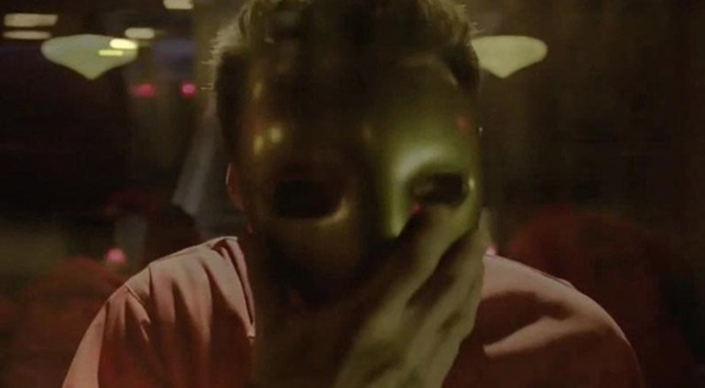
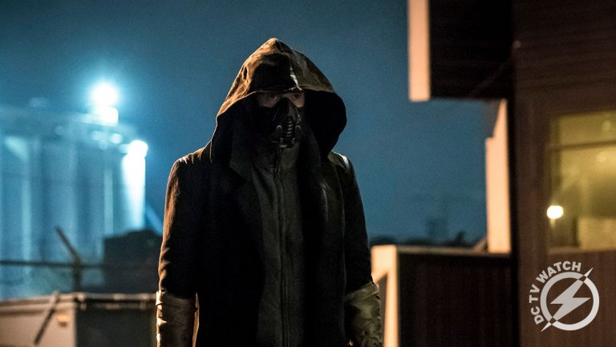

According to Batwoman, John Deegan has made a friend in Arkham Asylum in Gotham. The man in the golden mask: Roger Hayden, a.k.a. Psycho Pirate.

Cicada, Orlin Dwyer, wants to kill every meta-human to avenge her niece. He thought he killed Cisco(Vibe) but now he knows he is still alive.
Grace, Cicada's niece, is in a coma in the hospital because of an explosion during the enlightenment that knocked her out. Cicada is angry and depressed because of this.